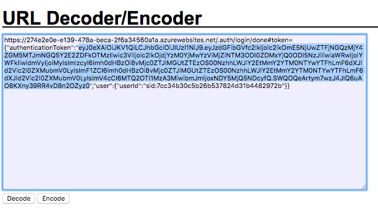
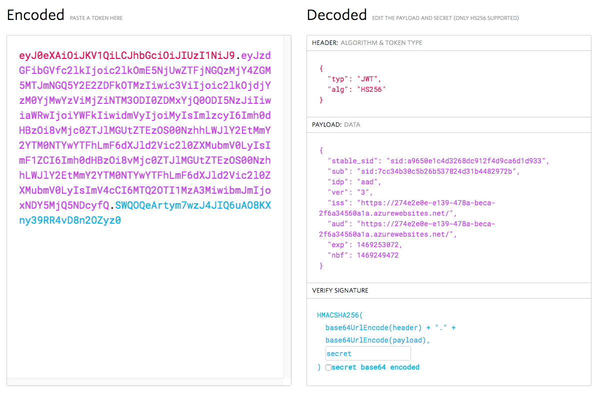
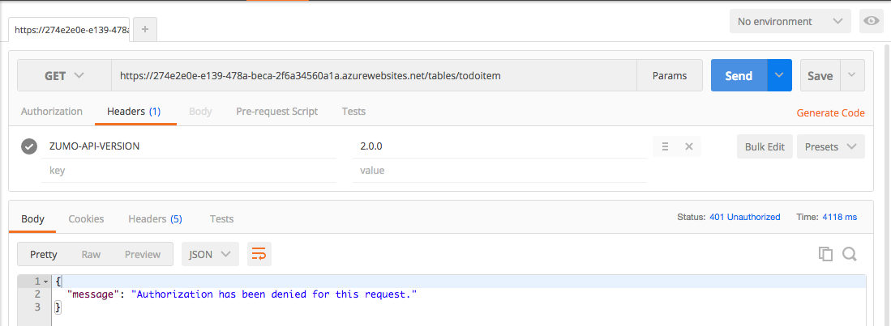
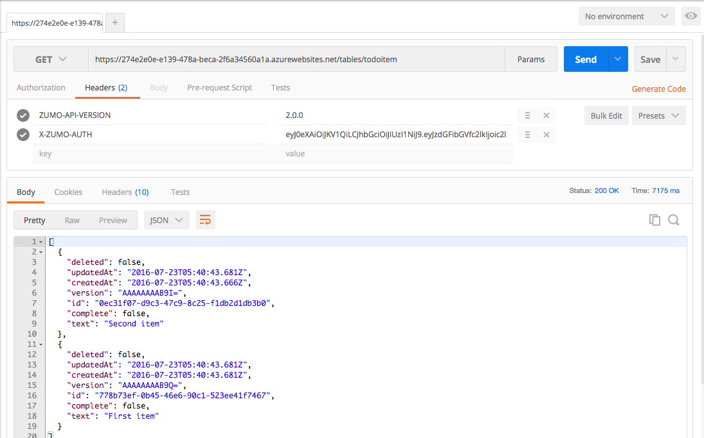

Debugging Authentication
What is in a JWT¶
At this point you will have the "Authentication Success" screen - perhaps several times. If you bring up the Developer Tools for your browser, you can take a look at the token that is being minted for the authentication session. Take a look at the URL on the "successful authentication" page.
The authentication token is clearly marked (after you strip away the URL encoding). You can use a [URL Decoder / Encoder][16] - just cut and paste the entire URL into the box and click on Decode. Note that the token is actually a JSON object. You can now easily extract the authenticationToken field from the JSON object.

Technically, the authentication token is a JSON Web Token. This is a mechanism for transferring claims between two systems securely. The JWT is a cryptographically signed JSON object. You can decode the JWT using the jwt.io tool. Cut and paste the authentication token into the Encoded box and it will be decoded.

Note that the contents of the JWT are revealed even without knowing the secret. The client secret is generated (or entered as part of a configuration) at the identity provider and is used to cryptographically sign the token. You will need the client secret to verify the signature of the token. The client secret is copied from the identity provider to the resource (in this case, the App Service).
We can see other items within the token. The Issuer is the place that issued the token. This is generally a URI. The Audience is an identifier for who the token is for. In this case, we have a token minted by the Azure App Service for use accessing that same App Service, so the issuer and audience are both the URI. If you look at an Auth0 token, you will see that the issuer is the Auth0 domain and the audience is the Client ID of the Auth0 tenant.
Each token will also have a number of claims. The most common claim is the Subject of the token. This is generally a security ID, but could be any unique user ID.
Info
Azure App Service sets the subject to a stable SID. The stable SID is unique to the identity provider that is used for the authentication and guaranteed not to change, even if the user changes their email address or username on the underlying identity provider.
Technically, the JWT can include any data and there are some identity providers that place just about everything about the user in the JWT. App Service keeps the amount of data small because the client will be sending the JWT with every request. Imagine adding a few kilobytes to every single request that the client makes. The bandwidth usage will add up quickly, and your app will be known as a bandwidth hog.
However, there are some fields that are pretty universal. Your JWT should always have the following fields:
- sub = Subject (the identifier for the token)
- exp = Expiry (when the token expires)
- nbf = Not Before (the earliest point in time the token is valid)
- iss = Issuer (the site that issued the token)
- aud = Audience (who is the token for)
The timestamps (exp and nbf) are all UNIX timestamps (i.e. the number of seconds since January 1, 1970).
App Service adds to this:
- stable_sid = Security Id of the user
- idp = the IdP that was used in the authentication request
- ver = the Version of the token
App Service will be able to validate any token provided to it when presented in an X-ZUMO-AUTH header. If you are using Azure Active Directory, you can also use the more standard Bearer Authorization header. If the token does not match, then the X-ZUMO-AUTH header will be stripped from the request before the request is passed to your site.
Testing Authentication without a Client¶
Testing authentication against your App Service without a client requires a REST client. I use Postman,
which is based on Google Chrome. If you use Firefox, you might want to take a look at RESTClient. Telerik
also distributes a web debugging proxy called Fiddler that can do API testing. To test the server, we will
need a token. We can get one by testing authentication configuration by pointing the browser to /.auth/login/aad.
The return URL will contain a token in the query string and as a secure cookie.
Tip
You can test any of the supported identity providers by replacing aad with the authentication provider name: facebook, google, microsoftaccount and twitter are possibilities here.
We can then do a request to /tables/todoitem to try and obtain the list of current tasks. We will need to add
two headers:
ZUMO-API-VERSIONshould contain a value of2.0.0.X-ZUMO-AUTHshould contain the token you received.
My first request shows authentication failing:

Go through one of the authentication flows and copy the authentication token. In Postman, add a new header called
X-ZUMO-AUTH and paste the authentication token in.

Note that we have tested all this without touching the client. Separating the backend operations from the client operations means we can be sure of where the inevitable bug that creeps in is located. We have verified that we can do each authentication flow on the server side and that the server is properly rejecting unauthenticated requests, plus it is properly returning data when authenticated requests are issued.
Developing Locally¶
One would normally be able to run the ASP.NET backend locally and get full functionality without authentication. However, authentication puts a stop to that because the redirect URLs, secrets and other authentication configuration settings only work with a known endpoint. To alleviate that, Azure Mobile Apps allows you to run a local server while using an authentication endpoint in Azure App Service. When the authentication transaction takes place, it is taking place against the Azure App Service. When it is not doing the OAuth transaction, however, it is operating against a local server.
Setting this up requires a little bit of local machine configuration and a change to the configuration of your client.
Update your Local Development Environment¶
The first step in this process is to make your local IIS development environment look more like the Azure App Service, particularly in reference to the authentication settings. This means setting up a few app settings that should be pulled from your App Service.
- Log on to the Azure Portal.
- Select your App Service from the App Services list.
- Click on Tools, then Advanced Tools, then Go.
Kudu (now known as Advanced Tools in the Azure portal menu) is the backend debug console for Azure App Service and there is a lot you can do here. Of note in this instance is that you can gain access to the keys and audience for your App Service.
- Click on Environment in the top banner.
- Click on Environment variables.
- Scroll down to the environment variables starting with WEBSITE_AUTH.
- Make a note of the WEBSITE_AUTH_SIGNING_KEY and WEBSITE_HOSTNAME values.
WEBSITE_AUTH_ALLOWED_AUDIENCES Setting
The WEBSITE_AUTH_ALLOWED_AUDIENCES setting may be seen. This is set only in the case of Azure Active Directory and may not be present (or not valid) if you configure other providers.
Add the following to your project Web.config <appSettings> section:
<appSettings>
<add key="PreserveLoginUrl" value="true" />
<add key="MS_SigningKey" value="Overridden by portal settings" />
<add key="EMA_RuntimeUrl" value="Overridden by portal settings" />
<add key="MS_NotificationHubName" value="Overridden by portal settings" />
<add key="SigningKey" value="{Your WEBSITE_AUTH_SIGNING_KEY}"/>
<add key="ValidAudience" value="https://{Your WEBSITE_HOSTNAME}/"/>
<add key="ValidIssuer" value="https://{Your WEBSITE_HOSTNAME}/"/>
</appSettings>
Tip
Both the ValidAudience and ValidIssuer will have a slash on the end and be a https URL.
The last three keys are the keys you will need to add. Make sure you do not have a HostName key as this is how
the startup file determines if you are running locally or remote. Talking of which, edit your
App_Start\Startup.MobileApp.cs file to include the following:
public static void ConfigureMobileApp(IAppBuilder app)
{
HttpConfiguration config = new HttpConfiguration();
new MobileAppConfiguration()
.AddTablesWithEntityFramework()
.ApplyTo(config);
// Use Entity Framework Code First to create database tables based on your DbContext
Database.SetInitializer(new MobileServiceInitializer());
MobileAppSettingsDictionary settings = config.GetMobileAppSettingsProvider().GetMobileAppSettings();
if (string.IsNullOrEmpty(settings.HostName))
{
app.UseAppServiceAuthentication(new AppServiceAuthenticationOptions
{
SigningKey = ConfigurationManager.AppSettings["SigningKey"],
ValidAudiences = new[] { ConfigurationManager.AppSettings["ValidAudience"] },
ValidIssuers = new[] { ConfigurationManager.AppSettings["ValidIssuer"] },
TokenHandler = config.GetAppServiceTokenHandler()
});
}
app.UseWebApi(config);
}
The UserAppServiceAuthentication() method sets up authentication checking. This section is not required when running
within App Service.
If you are running the server locally, you should either set up a local SQL Server instance and put the connection
string into the Web.config file, or open the firewall on your SQL Azure database so that your local development
environment can connect to it, then place the connection string in the Web.config. You can get the connection string
of the SQL Azure instance by looking at the Connection Strings in the Application properties of your App Service.
Update your Mobile Client¶
For this demonstration, I have updated the TaskList.UWP application so that it is using the server-flow
authentication for Azure Active Directory. This means updating the LoginAsync() method in the
Services\UWPLoginProvider.cs file to be the following:
public async Task LoginAsync(MobileServiceClient client)
{
// Server-Flow Version
await client.LoginAsync("aad");
}
This is because the default local IIS instance is IIS Express. IIS Express only listens for local connections. If you run a client from another device (for example, the Android emulator on a Hyper-V service or the iOS simulator on a Mac), then that client would be connecting via a network connection. You can still debug locally, but you need to convert your environment to IIS first.
In the TaskList (Portable) project, update the Helpers\Locations.cs file:
namespace TaskList.Helpers
{
public static class Locations
{
#if DEBUG
public static readonly string AppServiceUrl = "http://localhost:17568/";
public static readonly string AlternateLoginHost = "https://the-book.azurewebsites.net";
#else
public static readonly string AppServiceUrl = "https://the-book.azurewebsites.net";
public static readonly string AlternateLoginHost = null;
#endif
}
}
The AppServiceUrl is always set to the location of your backend. In this case, I right-clicked on the Backend
project and selected Properties then Web. The correct URL for local debugging is listed in the
Project URL. The AlternateLoginHost is set to the App Service when locally debugging or null if not. You can
specify the DEBUG constant in the Build tab.
In the same project, update the Services\AzureCloudService.cs constructor to the following:
public AzureCloudService()
{
client = new MobileServiceClient(Locations.AppServiceUrl);
if (Locations.AlternateLoginHost != null)
client.AlternateLoginHost = new Uri(Locations.AlternateLoginHost);
}
Tip
It's a good idea to separate the client and server into different solutions. Although it doesn't hurt anything to have them in the same solution (like we have), having the client and server separated allows you to attach a debugger separately - which allows you to debug both sides of the connection at the same time.
With these settings, the client will contact the AlternateLoginHost listed for the authentication process and then contact the local server for the rest of the transaction.
Run the Local Server¶
Running the local server and the client takes a larger machine. You need to run two instances of Visual Studio: one for the client and one for the server. This is really where you will appreciate multiple monitors (my personal favorite) or the snap action to the sides of the screens.
Ensure you have your backend and clients in different solutions if you intend to run both client and server. The debugger in Visual Studio will stop one to run the other when they are in the same solution.